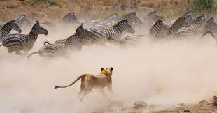

Bienvenid@ a ambientaly
A continuacion se muestran las paginas que hablan sobre la fauna, los tipos de animales que existen, algunos ejemplos y sus caracteristicas.
Animales terrestres
En biología, se habla de animales terrestres para referirse a aquellos animales que hacen vida preferente o enteramente sobre la tierra, es decir, en la superficie continental del planeta, a diferencia de los animales acuáticos, que habitan mayormente en el agua. Los animales terrestres se encuentran física y orgánicamente adaptados a la vida lejos del agua.
Ver mas
Animales marinos
Además de cubrir una extensión de más del 70% de la superficie de la Tierra, el océano es de especial importancia para la especie humana. Estas inmensas masas de agua albergan unas corrientes oceánicas que determinan las condiciones meteorológicas en el mundo y rigen la salud del planeta. Además, estas aguas albergan una increíble biodiversidad de la cual, aun a día de hoy, queda mucho por descubrir. La biodiversidad marina es un elemento fundamental para el desarrollo sostenible, tanto a nivel económico, social y ambiental, y deviene un sustento para la salud, el bienestar y la prosperidad para el ser humano.
Ver mas
Animales aereos
Los animales aéreos son aquellos que tienen la capacidad de volar y desplazarse por el aire. Esto no significa que vivan en este elemento sino que, combinan varios medios y territorios para desarrollarse y subsistir, pudiendo dormir y buscar alimento en la tierra y en el agua y desplazándose por el aire, por ejemplo
Ver mas
Animales viviparos
Se llama vivíparo a todo animal cuyo embrión se desarrolla, después de la fecundación, en una estructura especializada dentro del vientre de la hembra, en donde recibirá el alimento y el oxígeno necesarios para formar sus órganos, para crecer y madurar hasta el momento del nacimiento.
Ver mas
Animales oviparos
Los animales ovíparos son aquellos que nacen de un huevo, por ejemplo: pollos, tortugas, gallinas, avestruces, pájaros, patos, cocodrilo, tiburón, guacamaya, pavorreal, peces, dinosaurios, sapos, insectos, cangrejos, serpientes, entre otros
Ver mas